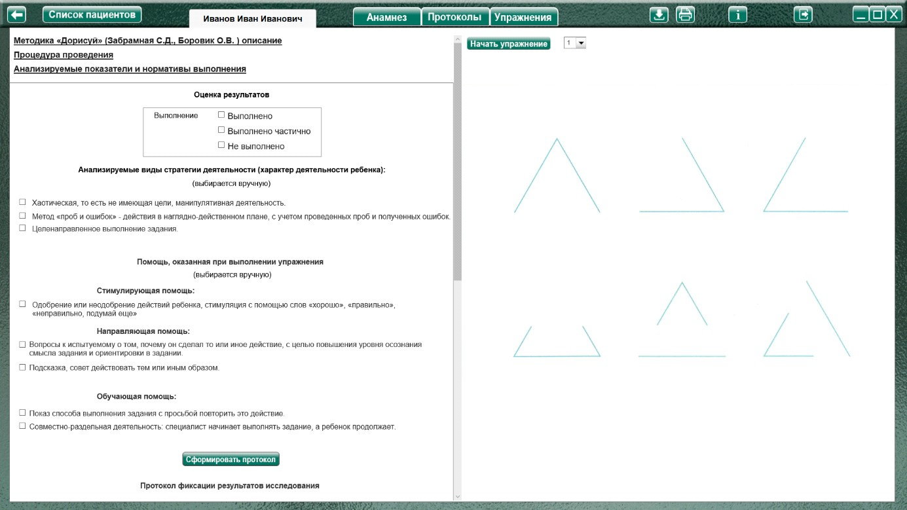
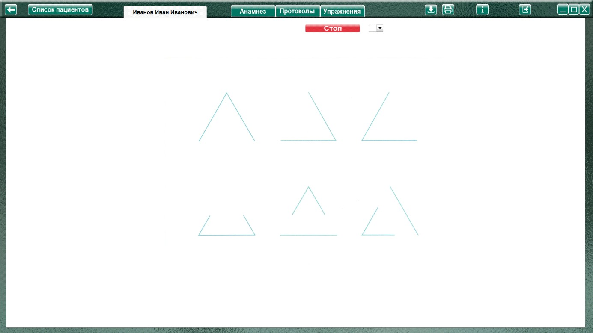
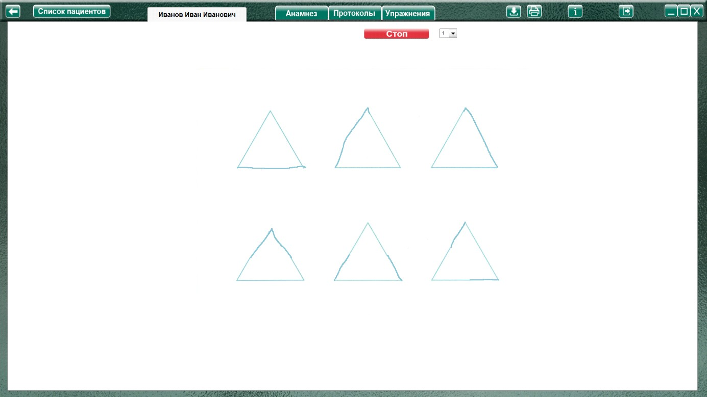
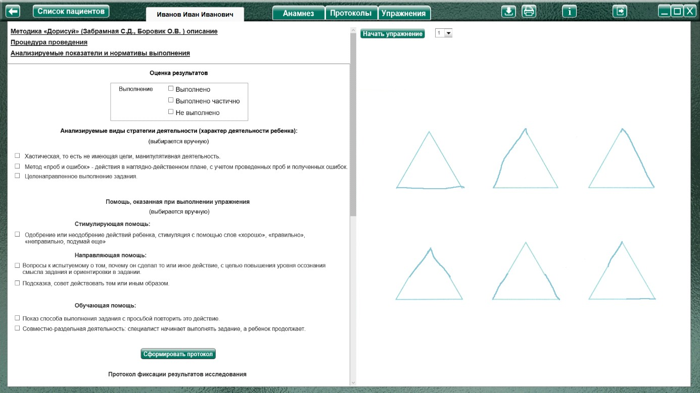

Методика "Дорисуй" (Забрамная С.Д., Боровик О.В.)
Методика "Дорисуй" (Забрамная С.Д., Боровик О.В.) описание
Процедура проведения.
В заданиях 1,2 изображены геометрические фигуры (треугольники и круги) с неполными контурами. Подчеркивается, что все треугольники одинаковы по величине, затем предлагаются задания типа: «Дополни до треугольника», «Дополни до круга».
В задании 3 изображены незаконченные контуры двух предметных изображений (бабочки и жука). Детям дается задание дорисовать эти предметы («Дорисуй жука» и т. д.).
В основу предлагаемых детям заданий положена методика Т. Н. Головиной, апробированная ею при работе с большим количеством нормальных и умственно отсталых детей.
Анализируемые показатели и нормативы выполнения
1,2 задание.
Дети с нормальным умственным развитием старшего дошкольного возраста выполняют задания таблиц 1, 2 без особого труда. Они понимают инструкцию и с интересом принимаются за работу.
Дети с задержкой психического развития к 6—7 годам выполняют эти задания.
Умственно отсталые дети справляются с этими заданиями в значительно более позднем возрасте; наибольшие трудности возникают у них при необходимости дополнить (дорисовать) круг. Большинство учащихся I—II классов специальной (коррекционной) школы VIII вида выполняют это задание неудовлетворительно. Они замыкают контур, не производя при этом необходимых кругообразующих движений, поэтому площадь дорисованной ими фигуры оказывается, как правило, уменьшенной. При дополнении контура треугольника многие умственно отсталые учащиеся II классов изменяют его площадь и форму, причем имеют место случаи распространенного принципа дополнения трех верхних треугольников на нижний ряд подобных фигур. Дети забывают, что все эти треугольники одного размера.
3 задание
Дети с нормальным умственным развитием: в 3 задании учащиеся I класса массовой школы понимают принцип работы и поэтому с ней справляются: некоторые из них допускают при дорисовывании асимметрию.
Дети с задержкой психического развития понимают задание, однако многим нужна организующая и разъяснительная помощь.
Умственно отсталые дети этого возраста испытывают большие трудности при необходимости понять принцип работы. В результате они допускают выраженную асимметрию и несоответствие заданному изображению.
Допускают ошибки или не выполняют задания даже многие ученики III—V классов специальной (коррекционной) школы. У них отмечается асимметричное дорисовывание заданных предметов, резкое увеличение или уменьшение дополняемой части, искажение формы. Помощь оказывается малоэффективной.
Необходимо учитывать эти особенности, так как от них в определенной мере зависят дальнейшие успехи в процессе обучения и выполнения трудовой деятельности.
Оценка результатов
Характер деятельности ребенка:
Виды возможной помощи:
Стимулирующая помощь
Направляющая помощь:
Обучающая помощь:
Протокол фиксации результатов исследования
_________________________________ _______________
ФИО Дата рождения
Методика |
Дорисуй |
Автор методики (адаптации, модификации) |
Забрамная С.Д., Боровик О.В. |
Цель: |
выявить наглядно-образные представления детей; способность целостного восприятия знакомых объектов; зрительно-двигательную координацию; графические навыки. |
Дата / специалист |
|
Результат: вывод об уровне развития |
|
Примечание |
|
Процесс выполнения диагностической методики |
|
№ |
Факт выполнения / Время |
Характер деятельности ребенка |
Виды помощи |
1 |
|||
2 |
|||
3 |
Логика заполнения протокола
Заполняется автоматически
Имя специалиста – логин при входе в программу.
Дата – дата и время прохождения упражнения в формате дд.мм.гггг. чч:мм
Факт выполнения (выполнено, не выполнено.) / заполняется в зависимости от выбора в разделе оценка результата.
/ Время - время, затраченное на прохождения задания.
Ячейки «Характер деятельности ребенка», «Виды помощи» заполняются в зависимости от выбора специалиста в поле «Оценка результатов» либо самостоятельно.
Остальные ячейки заполняются (правятся) специалистом самостоятельно.
Выполнение упражнения

Перед началом выполнения упражнения нужно выбрать в меню номер задания и нажать кнопку «Начать упражнение» (закрывая область оценки результата открывая задание на весь экран)

Выполнить задание согласно пункту «Процедура проведения». В первом задании нужно дорисовать треугольники мышкой с зажатой левой кнопкой.

Так же можно распечатать стимульный материал и рисовать на бумаге.

По окончании упражнения специалист нажимает кнопку «Стоп», открывая область оценки результата.
Так же можно распечатать стимульный материал (распечатываться будет тот рисунок, который выбран в меню выбора номера задания и отображается на правой половине экрана) и рисовать на бумаге. При выполнении задания на бумаге, можно отсканировать выполненное упражнение, и сохранить его в упражнении. В дальнейшем, при просмотре протокола на странице протоколов в строке «Результат: вывод об уровне развития» будет надпись: «Показать изображение», при клике по которой можно будет увидеть сохраненное изображение. Для сохранения нужно сохранить отсканированное изображение в любую папку на пк. На странице упражнения «Дорисуй» нажать кнопку «Загрузить файл», найти и сохранить рисунок. Так как в этом упражнении 3 рисунка, и соответственно 3 ссылки для просмотра, то рисунок сохраниться под тем номером, который выбран в данный момент в меню выбора задания.
При необходимости выбрать характер деятельности, виды помощи, и нажать кнопку «Сформировать протокол». Произвести оценку результата (заполнить оставшиеся ячейки протокола) согласно пункту «Анализируемые показатели и нормативы выполнения».
Только после формирования протокола по заданию можно продолжить выполнения упражнения!
Для продолжения выбрать в меню следующее задание и нажать кнопку «начать упражнение»